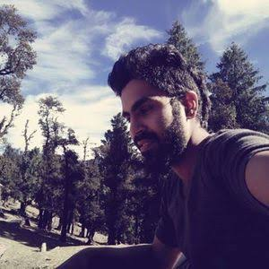

My name is Shalinder however I feel a name is just any sound to which
you respond.So lets say I am a human,a living organism, who was lucky
enough to gain some intelect over years of social evolution.I am
simply a creature on a quest,on a journey limited by the duration
called life.Ironically the duration is also the journey. I was and am
still,a litlle bit,caught up in the vicious cycle of corporate society
however i strive to set free and also help others with a similiar
dream,move towards it. Read on to know more
To connect on facebook CLICK HERE
To connect with me Email me